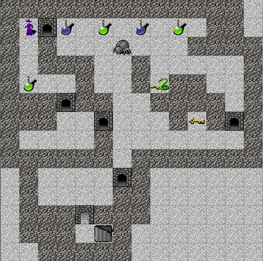

Haskell roguelike
Introduction
In this series of posts I’m going to discuss some of the major design decisions that you will need to consider when making a Haskell roguelike game. I’ll be talking about how the code is implemented as well as the decisions I took along the way and why.
See the chapter list below to get an idea of what topics I’ll be covering.
What is a roguelike?

RogueBasin defines a roguelike as
A Roguelike is usually described as a free turn-based computer game with a strong focus on intricate gameplay and replayability, and an abstract world representation using ASCII-based display, as opposed to 3D graphics. Of course, as with any genre, there are deviations from the norm.
Other roguelike tutorials and engines
There are several good Haskell roguelike tutorials and tools. The ones I know about are
- Haskell game engine library for ASCII roguelike games
- Code Us Some Roguelike in Haskell!
- Complete Roguelike Tutorial
- Haskell category on rogue basin
- Haskell roguelike
Each of the tutorials takes a different approach, cover different topics and address different levels of familiarity with haskell. The more the merrier! If you are interested in building a roguelike, or just looking for ideas for writing games in Haskell, then looking at the links above as well as this series seems like a good idea.
LambdaHack is a game engine for making ASCII roguelike games. It is definitely worth taking a look at. For this series I decided not to use LambdaHack as it already implements many of the things I was interested in learning about. This is a trade-off you’ll have to make. Are you currently more interested in learning how to build the game or more interested in getting a robust game together? I’d suggest learning with a small roguelike first as you’ll then have a much better idea of what a game engine offers or how it may constrain you.
RogueBasin has a vast amount of detail on creating roguelike games. Its well worth your time to look at for ideas. I’ll be referring to articles from roguebasin throughout the series
The series
Why read this series?
Apart from just being another perspective, I think that these are some reasons you may want to continue reading
- Discussion of all the basics since I’m not using a game engine
- UI style
- Reasonably simple Haskell (I hope!)
- In total the game is under 1500 lines of haskell with all the features mentioned below
- AI implementation
- Decisions about energy systems, viewport scrolling, levels and managing a plot
Also I’m not a gamer and this is the first game I’ve ever written, so that should bring a slightly different perspective ;)
Structure
There are 20 “chapters”. Each chapter builds on the previous one. Each chapter’s code is available on github and has a working example. At the end of each chapter is a patch file that shows what was added/changed.
Notes on the code
I’ve tried to keep the Haskell code simple, hopefully it is easy to follow even if you don’t have much experience. E.g. There is only one transformer used (chapter 14) and that is entirely optional.
I am using Protolude as my prelude. It should be fairly easy to switch to something else. Note that protolude defines <<$>> which is the same as (fmap . fmap) or <$$> from composition-extra
Lenses
I am using lenses, since there are several nested record types I use. If you have not used lens before it may seem odd. I’m mostly using only three lenses, so you should be able to follow along without worrying about them too much.
If you are unfamiliar with lenses here are some links that may help get you started quickly,
And here are a few quick examples that may help you get a sense for what they do.
Given this definition
{-# LANGUAGE NoImplicitPrelude #-}
{-# LANGUAGE OverloadedStrings #-}
{-# LANGUAGE TemplateHaskell #-}
module Main where
import Protolude
import qualified Data.Text as Txt
import Control.Lens
import Control.Lens.TH
data Parent = Parent { _pName :: Text
, _pChild :: Child
} deriving (Show)
data Child = Child { _cName :: Text
} deriving (Show)
makeLenses ''Parent
makeLenses ''Child
main :: IO ()
main = do
let parent = Parent { _pName = "parent1"
, _pChild = Child { _cName = "child1" }
}^.
The ^. lens acts as a field getter
# With lens
putText $ parent ^. pName
putText $ parent ^. pChild ^. cName
# Without lens
putText $ _pName parent
putText $ _cName . _pChild $ parentWhich both print
parent1
child1There is not too much difference between the two styles, yet.
.~
The .~ lens acts as a field setter
# With lens
print $ parent & pName .~ "newName"
print $ parent & (pChild . cName) .~ "new childName"
# Without lens
print $ parent { _pName = "newName" }
print $ parent { _pChild = (_pChild parent) { _cName = "new childName" } }Which both print
Parent {_pName = "newName", _pChild = Child {_cName = "child1"}}
Parent {_pName = "parent1", _pChild = Child {_cName = "new childName"}}Once you start updating nested records, I think the lens code is much easier to read. The deeper the nesting the more true this is.
%~
The %~ lens acts as a field updater that works by sending the current value through a function
# With lens
print $ parent & pName %~ Txt.toUpper
print $ parent & (pChild . cName) %~ Txt.toUpper
# Without lens
print $ parent { _pName = Txt.toUpper . _pName $ parent }
print $ parent { _pChild = (_pChild parent) { _cName = Txt.toUpper . _cName . _pChild $ parent } }Which both print
Parent {_pName = "PARENT1", _pChild = Child {_cName = "child1"}}
Parent {_pName = "parent1", _pChild = Child {_cName = "CHILD1"}}Here I’d say the lens code is significantly easier to read, i.e. the intent is much clearer.
Quite often you’ll end up combining these three lenses and the alternative, in my view, is way too noisy. There are some tradeoffs using lens, e.g. template haskell but I feel that it is justified by the resulting code. Obviously if you prefer not to use lens you can do everything reasonably easily without it.
Chapters
- 01 - UI & tiles
- 02 - UI Code
- 03 - Entities & Drawing
- 04 - Map loading
- 05 - Actors
- 06 - Moving the player
- 07 - Collisions
- 08 - Layers
- 09 - Viewport scrolling
- 10 - Field of view
- 11 - Sticky light
- 12 - Energy
- 13 - Utility AI
- 14 - Utility AI annotations
- 15 - Memory
- 16 - Debugging
- 17 - Levels
- 18 - Mutliple levels
- 19 - Story
- 20 - Structure
- 21 - Conclusion